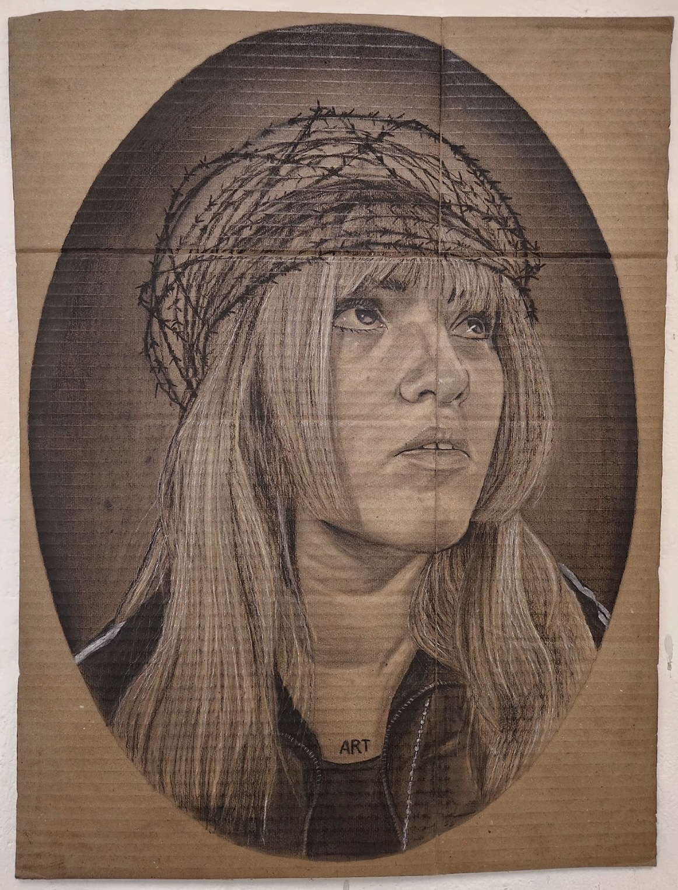
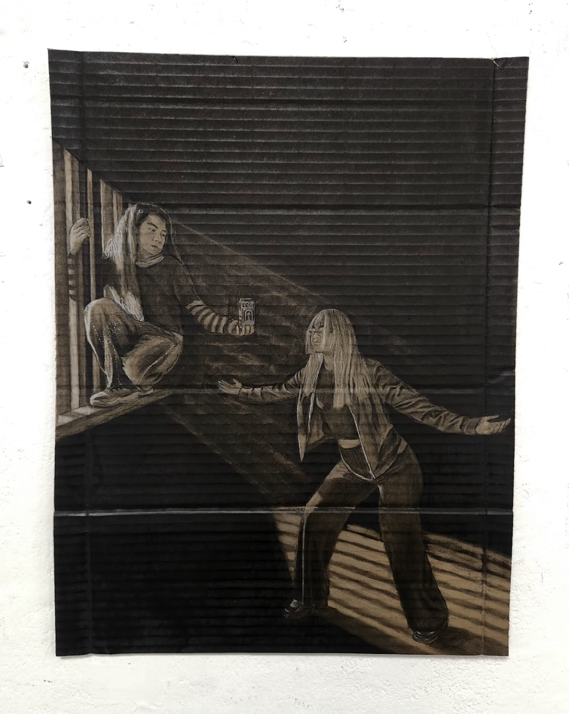

(re)encarnaciones

(re)encarnación n 1°
Cartón reciclado y carboncillo
65 x 45 cm. | 2025

(re)encarnación n 2°
Cartón reciclado y carboncillo
58 x 44 cm. | 2025

(re)encarnación n 3°
Cartón reciclado y carboncillo
47 x 35 cm. | 2025

(re)encarnación n 4°
Cartón reciclado y carboncillo
57 x 77 cm. | 2025